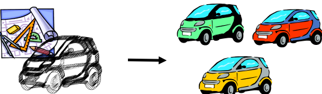

Existen diferentes estilos de programación:
Cada enfoque tiene ventajas, desventajas y usos específicos.
La Programación Orientada a Objetos (POO) nace como un conjunto de prácticas que definen un estilo de programación basado en la forma humana de percibir el mundo: a través de objetos y relaciones.
La POO permite organizar, clasificar y relacionar componentes del problema de forma lógica y estructurada.
La POO es un estilo de programación en el que los elementos del problema se conciben como objetos, con atributos, comportamientos y relaciones.
Los objetos tienen:
Definición formal (Rumbaugh): “Un objeto es un concepto, abstracción o cosa con un significado y límites claros en el problema en cuestión”.
Según Booch, un objeto posee:
Representa lo que el objeto sabe. Se implementa mediante atributos y relaciones con otros objetos.
Define lo que el objeto puede hacer. Se implementa a través de métodos y operaciones.
Cada objeto tiene una identidad única, independiente de su estado.
Una clase es una abstracción que describe un grupo de objetos con:
Una clase enfatiza lo relevante y suprime lo innecesario.
Un objeto es una instancia de una clase.
Clase: Curso
Estado (Atributos):
Comportamiento (Métodos):
Una clase es una definición abstracta con atributos, estado y operaciones.
Ejemplo:
Clase: Lavadora
Representar lo esencial de un objeto sin incluir características no relevantes.
Separar los aspectos internos y externos de un objeto.
Dividir la aplicación en módulos lo más independientes posible.
Clasificación de abstracciones en niveles.
Una clase padre define atributos y métodos comunes. Las subclases heredan esa definición.
Asociación: relación entre objetos. Agregación: un objeto contiene a otro.
Un mismo método puede tener múltiples implementaciones según la clase.
El constructor se ejecuta al crear un objeto, el destructor al eliminarlo.
Controlan el nivel de acceso a los atributos y métodos de una clase.